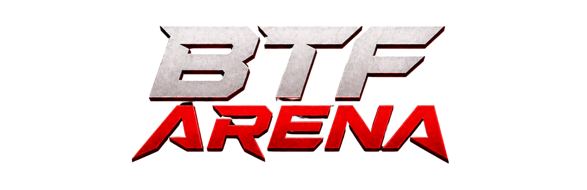

Pour qui
Traders qui veulent s’affronter, suivre leur rang en direct, gagner de l’XP et accéder à des deals négociés pour l’arène.

BTF Arena est l’application mobile de compétition paper trading : arènes chronométrées, classement live, terminal, chat global, perks partenaires et progression XP. Un seul compte BTF, desktop et mobile.
Cinq onglets. Une session joueur unique. Tout ce qu’il faut pour entrer dans une arène, trader, discuter et progresser.
Traders qui veulent s’affronter, suivre leur rang en direct, gagner de l’XP et accéder à des deals négociés pour l’arène.
Tu rejoins une arène, tu trades en paper (10 000 $ de départ), tu montes au classement. Certaines arènes ont une limite de perte journalière.
Même compte BTF que le web. Positions, rang et profil suivent. Connexion sans mot de passe : code email, SMS à l’inscription.
Chat global avec photos, réponses, profils joueurs. Actualités via la cloche. Notifications push (ordres, rang, arènes, replies).
XP, niveaux, titres et cadres. Missions à l’accueil. Badges de champion. Journal de trades et cartes à partager.
Anglais par défaut. Français si le téléphone est en FR. Switch EN / FR dans le Profil, mémorisé sur l’appareil.
La barre du bas suffit. Les autres écrans s’ouvrent depuis Accueil, Profil, Chat ou le terminal.
Sans compte : accueil, perks et actualités restent visibles. Chat, Trader et Profil demandent une connexion.
Une fois connecté, le badge du chat indique les messages non lus. Les push ouvrent directement le bon écran (news, rang, reply, terminal).
Vitrine « Qui sera le meilleur trader de l’année ? » avec podium. Le tap ouvre le classement global officiel.
Filtres En cours / À venir / Terminées. Chaque carte : statut, joueurs, dates, dotation, ton rang. Actions : S’inscrire, Trader, Classement.
Le salon de la communauté BTF. Temps réel, photos, réponses. Aucun message n’est un conseil financier.
Titre Chat global, avatars des derniers traders et compteur. Ligne de disclaimer sous le header.
Texte jusqu’à 600 caractères. Appui long pour répondre. Tap sur un nom ou un avatar pour ouvrir le profil.
Bouton + → Appareil photo ou Galerie. Aperçu plein écran, légende optionnelle, envoi. Tap pour voir en grand.
WebSocket + filet de sécurité HTTP. Cache local des 150 derniers messages pour ouvrir l’onglet instantanément.
Une réponse push ouvre directement le chat. Badge +N sur l’onglet tant que tu n’as pas lu.
Rate limit d’envoi, images compressées côté client et serveur (WebP), légende facultative.
Même session paper, mêmes positions. Tu choisis une arène déjà rejointe, puis tu trades.
Si l’arène a une limite (ex. 5 %), un encart affiche Limite de perte journalière, le plancher du jour, et le reset à 00h00 UTC. Si le plancher est touché : compte hors classement, plus d’ordres.
Le trading réel de compétition n’est pas encore ouvert sur le terminal mobile : paper uniquement.
Pas un catalogue d’affiliation brut. Une sélection BTF, avec un deal mis en avant et le reste à portée de tap.
Chaque carte : logo, avantage, Débloquer ou Bientôt. Modal : description, perks, code copiable, lien partenaire.
Contenu géré côté admin, traduit EN/FR. Disclaimer affilié affiché. Les cash prizes d’arène restent distincts des deals.
Avatar avec cadre XP et niveau, nom, titre (rareté), email. Badges : BTF 2026, Champion, Paris, Summer, Autumn.
PnL total, win rate, nombre de trades. Liste de tes arènes avec rang et PnL. 5 derniers événements XP.
Journal de trading, classement global, modifier le profil, switch langue EN/FR, déconnexion de l’appareil.
Photo, nom trader, réseaux (X, Instagram, Discord, site). Email et téléphone en lecture seule. Connexion sans mot de passe.
Historique des trades par arène. Meilleurs / pires. Partage d’une carte PnL depuis un trade.
Carte 1080×1350 depuis un classement : rang, participants, nom, PnL, CTA « Entre dans l’arène ».
L’XP est idempotente : chaque action ne se gagne qu’une fois. Niveau max 50. Formule : seuil du niveau N = 250 × (N−1)².
| Niveaux | Titre | Cadre |
|---|---|---|
| 1–2 | Nouveau Challenger | Challenger |
| 3–4 | Trader Actif | Bronze |
| 5–7 | Compétiteur | Argent |
| 8–11 | Chasseur de Podium | Or |
| 12–19 | Élite des Arènes | Platine |
| 20+ | Légende BTF | Diamant |
| Action | XP |
|---|---|
| Bienvenue (création de compte) | +100 |
| Arène rejointe | +50 |
| Premier trade | +75 |
| Arène terminée | +100 |
| Podium #1 / #2 / #3 | +500 / 350 / 250 |
| Streak 3 / 5 / 10 / 20 arènes | +200 / 350 / 700 / 1500 |
| Badge débloqué | +300 |
| Achievement | XP | Idée |
|---|---|---|
| 3 / 5 / 10 wins d’affilée | 120 / 250 / 600 | Série de trades gagnants |
| Plan respecté · 3 TP | 180 | 3 take profits, pas de liquidation |
| Capital préservé | 200 | Arène finie, ≥ 5 trades, pas de breach |
| Risk Manager | 400 | ≥ 10 trades, DD ≤ 4 %, pire perte ≤ 2 % |
| Espérance positive | 450 | WR ≥ 55 %, PF ≥ 1,5, PnL > 0 |
| Régularité · 3 jours + | 350 | 3 journées UTC positives |
Chaque nouveau badge = +300 XP. Les titres et cadres se mettent à jour tout seuls quand le niveau change.
Optionnel par arène (souvent 5 %). Le plancher = équité de début de journée UTC × (1 − X %). Si l’équité touche ce niveau, le compte est éliminé pour cette arène. La baseline se recalcule à minuit UTC le lendemain — mais un breach reste définitif.
Créer un compte → +100 XP → rejoindre une arène → +50 XP → ouvrir Trader → premier ordre → +75 XP → discuter dans le Chat → débloquer un perk → viser un achievement ou un podium. Tout le reste (journal, classement, news, partage) part du Profil ou de l’Accueil.
Une app de compétition complète : paper trading live, règles d’arène, communauté, deals et progression. Prête à être présentée, testée, et itérée.
onglets
niveaux XP
levier paper
langues
compte BTF